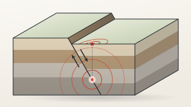

实时地震
美国地质调查局（USGS）
Mac 版 · 免费
Shapefile、GeoPackage、NetCDF、GeoTIFF、GPX、KML、带坐标的 CSV：就是你从 NASA、美国地质调查局（USGS）或城市开放数据平台下载的那些文件。凌波微图几秒钟就把它们变成地图。不用学 GIS，什么都不用设置。
把文件拖进凌波微图；Shapefile、GeoPackage 和 NetCDF 文件也可以直接双击打开。
凌波微图需要搭载 Apple 芯片的 Mac。Windows 版正在制作中。
免费 · 约 74 MB · macOS 13 及以上 · Apple 芯片 · 断网可用

地图数据
IBTrACS_storm_tracks_1980-2026.shp：4999 条风暴路径，按最大风速着色
能打开什么
把文件拖进凌波微图，它就会以正确的投影落在正确的位置，马上可以探索。
.shp
边界、道路、风暴路径。记得把 .dbf、.shx 和 .prj 文件放在它旁边。
.zip
直接打开，不用解压。
.gpkg
一个整洁的文件，可以装下很多图层。
.geojson.json
网络上通用的地图格式，开放数据平台和 API 常用。
.csv.tsv.xlsx
带经纬度列的 CSV、TSV 或 Excel。
.kml.kmz
来自 Google Earth 的地标、路径和区域。
.gpx
手表或手机记录的跑步、骑行和徒步轨迹。
.tif.tiff
高程、土地覆盖、卫星影像和无人机影像。
.nc
气候和天气网格，用时间滑块播放。
双击 Shapefile、GeoPackage 和 NetCDF 文件会在凌波微图里打开。其他文件双击会用别的应用打开，所以请把它们拖进凌波微图，或者右键 › 打开方式 › 凌波微图。
免费数据
精心挑选的公开数据集，从实时地震到罗马道路。大多数点一下就能下载。
打开之后

滚动、双指缩放、拖动，从整个地球一直看到一段海岸。

输入城市名就飞过去，输入一个名字就在文件里找到它：比如这里，每一场叫 Haiyan（海燕）的风暴。

看看它是什么、和同类比起来怎么样。2011 年日本东北大地震比 14537 次地震中的 99% 都强。

带时间步的文件会有一个滑块。点一下播放，看一整个夏天的热浪怎样移动。
每个数字都来自你的全部数据，而不只是屏幕上看得见的那一部分；每一步都能撤销。
练一练
不用下载：它们就装在应用里。


还内置了：1900 年以来的地震、火山、机场、发电厂、世界城市、国家和地形。
分享
加上标题、图例和数据来源，导出成幻灯片、报告或社交媒体上用的图片。

凌波微图需要搭载 Apple 芯片的 Mac。Windows 版正在制作中。
免费 · 约 74 MB · macOS 13 及以上 · Apple 芯片 · 断网可用
凌波微图基于 RustGIS 构建。